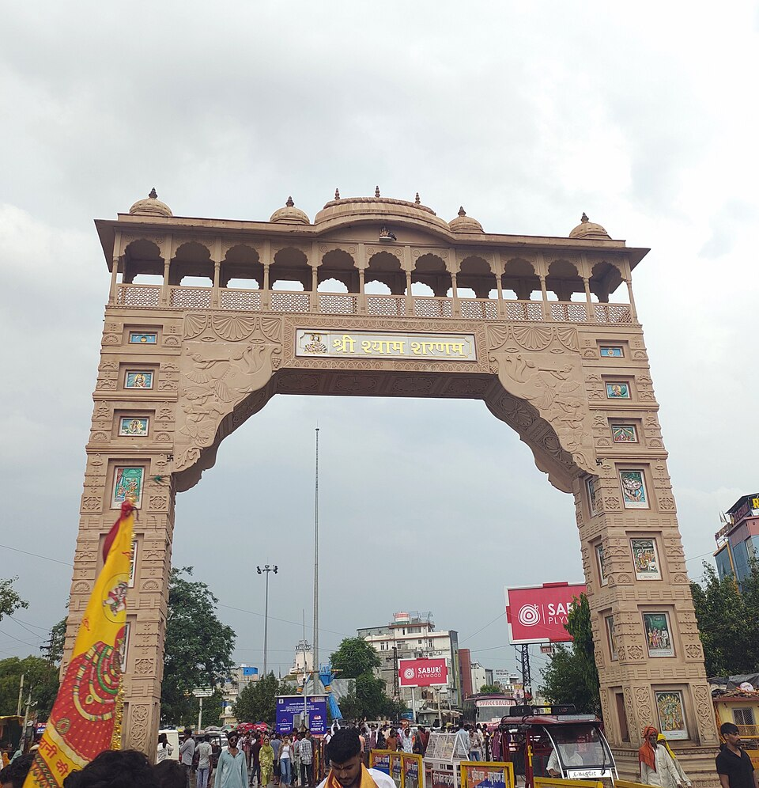
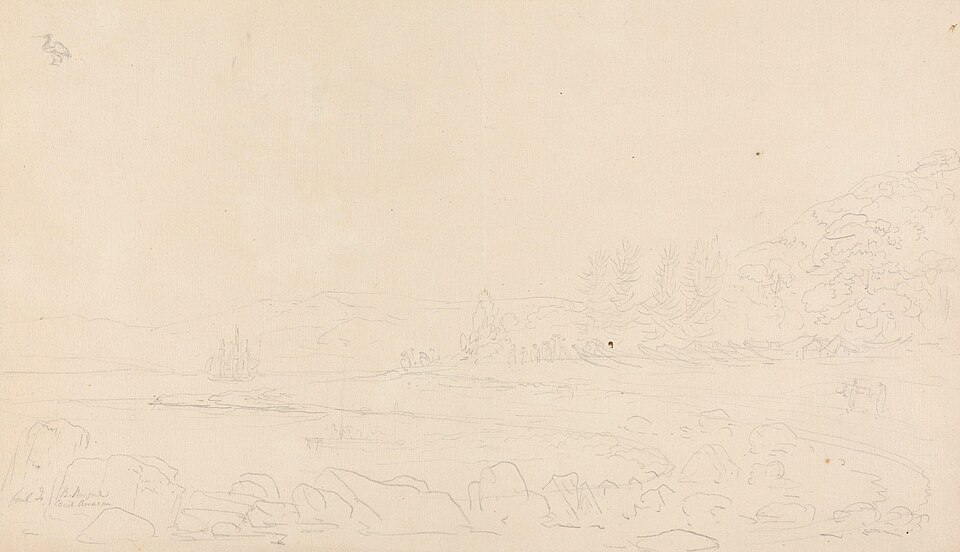
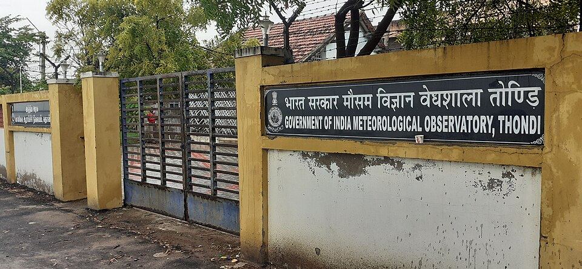

राष्ट्रीय
राष्ट्रीयओडिशा की ओर बढ़ा चक्रवात 'अकवान', तीन लाख लोग सुरक्षित स्थानों पर पहुंचाए गए
बंगाल की खाड़ी में उठे चक्रवात 'अकवान' के मद्देनजर ओडिशा के तटीय इलाकों से करीब तीन लाख लोगों को सुरक्षित निकाला गया है। तूफान के शुक्रवार दोपहर पुरी और गोपालपुर के बीच तट से टकराने की संभावना है।
ताज़ा ख़बरें
मेडिकल साइंस में फीकल माइक्रोबायोटा ट्रांसप्लांट का इस्तेमाल, जानिए क्या है मल डोनेशन
मेडिकल साइंस में अब फीकल माइक्रोबायोटा ट्रांसप्लांट के जरिए आंतों के संक्रमण के इलाज के लिए मल डोनेशन की प्रक्रिया अपनाई जा रही है, जिसमें स्वस्थ बैक्टीरिया का उपयोग किया जाता है।
व्यापारजेन जी के लिए सैलरी ही नहीं, मानसिक शांति और वर्कप्लेस कल्चर भी अहम
युवाओं की नई पीढ़ी यानी जेन जी अब नौकरी चुनते वक्त सिर्फ मोटी सैलरी नहीं, बल्कि ऑफिस के माहौल, सम्मान और मानसिक शांति को भी प्राथमिकता दे रही है।
राष्ट्रीयउत्तर प्रदेश के मुख्यमंत्री योगी आदित्यनाथ की मां सावित्री देवी का निधन
उत्तर प्रदेश के मुख्यमंत्री योगी आदित्यनाथ की मां सावित्री देवी का 91 वर्ष की आयु में लंबी बीमारी के बाद निधन हो गया है। वह कुछ समय से अस्वस्थ थीं।
राष्ट्रीयउत्तर प्रदेश के मुख्यमंत्री योगी आदित्यनाथ की माता सावित्री देवी का निधन
उत्तर प्रदेश के मुख्यमंत्री योगी आदित्यनाथ की माता सावित्री देवी का लंबी बीमारी के बाद उत्तराखंड में उनके पैतृक गांव में निधन हो गया।
 टेक
टेकGTA 6 में पहली बार मुख्य भूमिका में होगी महिला, गेमिंग जगत में चर्चा
लोकप्रिय वीडियो गेम सीरीज़ 'ग्रैंड थेफ्ट ऑटो' के आगामी संस्करण GTA 6 में लगभग 30 साल में पहली बार एक महिला को मुख्य किरदार के रूप में शामिल किया गया है, जिस पर गेमिंग इंडस्ट्री में बहस छिड़ गई है.
टेकएंथ्रोपिक के आईपीओ से हजारों कर्मचारी बने करोड़पति और अरबपति
आर्टिफिशियल इंटेलिजेंस कंपनी एंथ्रोपिक के आईपीओ के बाद इसके 95 प्रतिशत से अधिक कर्मचारी डॉलर मिलियनेयर बन गए हैं। कंपनी के हजारों कर्मचारियों को भारी वित्तीय लाभ हुआ है।
 राष्ट्रीय
राष्ट्रीययूपी चुनाव: सपा और कांग्रेस के बीच सीट बंटवारे पर बातचीत तेज
उत्तर प्रदेश विधानसभा चुनाव से पहले समाजवादी पार्टी और कांग्रेस के बीच सीट बंटवारे को लेकर सरगर्मी बढ़ गई है। दोनों दलों ने बातचीत के लिए कमेटियों का गठन कर लिया है।
राष्ट्रीयवैशाली में निशांत कुमार को सुरक्षाकर्मियों के धक्का देने का वीडियो वायरल, सियासत गर्माई
बिहार के वैशाली में निरीक्षण के दौरान सुरक्षाकर्मियों द्वारा निशांत कुमार को धक्का दिए जाने का वीडियो सामने आने के बाद राजनीतिक पारा चढ़ गया है। राजद ने इसे अपमान बताया है, जबकि जदयू ने जांच की मांग की है।
राष्ट्रीयप्यू रिसर्च की रिपोर्ट: 2070 तक भारत और दुनिया में कैसी होगी धार्मिक जनसांख्यिकी
प्यू रिसर्च सेंटर की रिपोर्ट के अनुसार, 2050 और 2070 तक भारत और दुनिया में विभिन्न धर्मों की आबादी, प्रजनन दर और जनसांख्यिकीय बदलावों के अनुमान सामने आए हैं।
अंतरराष्ट्रीयबांग्लादेश में हिंसक झड़पों के बाद सुरक्षा कड़ी, प्रधानमंत्री रहमान ने अवामी लीग पर लगाया साज़िश का आरोप
बांग्लादेश में पूर्व प्रधानमंत्री शेख हसीना की पार्टी के बंद के आह्वान के बाद भड़की हिंसा में चार लोगों की मौत हो गई है। प्रधानमंत्री तारिक रहमान ने अवामी लीग पर देश को अस्थिर करने का आरोप लगाया है।
अंतरराष्ट्रीयमार्वल कॉमिक्स ने आयरन मैन को दिया नया रूप, बने 'द आयरन थिंग'
मार्वल कॉमिक्स ने आगामी 'हल्क वॉर' स्टोरीलाइन के लिए आयरन मैन के नए और हैरान करने वाले रूप 'द आयरन थिंग' से पर्दा उठाया है।
राष्ट्रीयलखनऊ की सुमीरा ने एनडीए परीक्षा में हासिल की 11वीं रैंक, एयरफोर्स में होंगी शामिल
लखनऊ की सुमीरा ने एनडीए परीक्षा में 11वीं रैंक हासिल की है। वायुसेना में पायलट पिता से प्रेरणा पाकर उन्होंने यह सफलता हासिल की है और वह जल्द ही एयरफोर्स ज्वाइन करेंगी।
टेकहोंडा ने पेश की नई रडार बेस्ड बाइक सेफ्टी टेक्नोलॉजी
होंडा ने ईइक्मा 2026 में नई 'होंडा सेंसिंग राइड' तकनीक पेश की है। रडार आधारित इस तकनीक में 10 सेफ्टी फीचर्स दिए गए हैं, जो राइडर को सड़क पर खतरों से आगाह करेंगे।
राष्ट्रीयदेवी-देवताओं की तुलना करना अनुचित, सनातन के अपमान पर चलेगा कानून का डंडा: बाबा रामदेव
योगगुरु बाबा रामदेव ने गोंडा में एक कार्यक्रम के दौरान कहा कि सनातन धर्म में देवी-देवताओं की आपस में तुलना नहीं करनी चाहिए। उन्होंने सनातन का अपमान करने वालों के खिलाफ कानूनी कार्रवाई की चेतावनी दी।
 व्यापार
व्यापारभारतीय शेयर बाजार में शुरुआती कारोबार में गिरावट, सेंसेक्स और निफ्टी लुढ़के
शुक्रवार को शुरुआती कारोबार में भारतीय शेयर बाजार में गिरावट दर्ज की गई। सेंसेक्स 269.83 अंक गिरकर 82,751.92 के स्तर पर और निफ्टी 82.40 अंक फिसलकर 25,431.90 पर पहुंच गया।
राष्ट्रीयराजस्थान पंचायत चुनाव 2026: शुरुआती रुझानों में भाजपा आगे
राजस्थान पंचायत चुनाव के लिए वोटों की गिनती जारी है। शुरुआती रुझानों के अनुसार भाजपा ने शुरुआती बढ़त हासिल कर ली है। चार चरणों में मतदान हुआ था।
अंतरराष्ट्रीयपॉप गायक ब्रूनो मार्स के पिता पीटर हर्नांडिज का 74 वर्ष की आयु में निधन
प्रसिद्ध पॉप गायक ब्रूनो मार्स के पिता पीटर हर्नांडिज का 74 वर्ष की आयु में निधन हो गया है। गायक ने सोशल मीडिया पर पिता को श्रद्धांजलि देते हुए उनके साथ अपनी यादें साझा कीं।
राष्ट्रीयअकवान तूफान का असर, आंध्र प्रदेश और ओडिशा तट पर भारी बारिश की चेतावनी
चक्रवात अकवान के आज आंध्र प्रदेश और ओडिशा के तटों से टकराने की संभावना है। इसके प्रभाव से देश के 14 राज्यों में बारिश के आसार हैं, जबकि तापमान में गिरावट से ठंड बढ़ गई है।
 राष्ट्रीय
राष्ट्रीयअयोध्या में पंचकोसी परिक्रमा के लिए उमड़ी भीड़, सुरक्षा के कड़े इंतजाम
रामनगरी अयोध्या में पंचकोसी परिक्रमा के लिए देश भर से श्रद्धालु पहुंचे हैं। सरयू स्नान और पूजन के बाद भक्त परिक्रमा कर रहे हैं, जिसे लेकर प्रशासन ने सुरक्षा के पुख्ता इंतजाम किए हैं।

राष्ट्रीयखाटूश्यामजी मंदिर के पास रेस्टोरेंट में लगी आग, टला बड़ा हादसा
राजस्थान के सीकर जिले में खाटूश्यामजी मंदिर के वार्षिक पाटोत्सव के दौरान एक रेस्टोरेंट में आग लग गई। पांच दमकल गाड़ियों ने आग पर काबू पाया। इस घटना में किसी प्रकार की जनहानि की सूचना नहीं है।
राष्ट्रीयदुमका में पारिवारिक विवाद के दौरान पिता ने की बेटे की हत्या
झारखंड के दुमका जिले में शराब के नशे में हुए विवाद के बाद एक पिता ने कथित तौर पर कुदाल से हमला कर अपने बेटे की हत्या कर दी। पुलिस ने आरोपी पिता को हिरासत में ले लिया है।
 अंतरराष्ट्रीय
अंतरराष्ट्रीयशी जिनपिंग और पुतिन के साथ शिखर सम्मेलन से ट्रंप को क्या मिला
चीन में शी जिनपिंग और व्लादिमीर पुतिन के साथ हुई त्रिपक्षीय बैठक से अमेरिकी राष्ट्रपति डोनाल्ड ट्रंप को ठोस नतीजों के बजाय मुख्य रूप से भव्य तस्वीरें और राजनीतिक 'ऑप्टिक्स' हासिल हुए।
अंतरराष्ट्रीयकनाडा ने गोल्डी बराड़ को बनाया शीर्ष वांछित अपराधी, रखा इनाम
कनाडा ने वांछित गैंगस्टर गोल्डी बराड़ को अपने शीर्ष 25 सबसे अधिक वांछित अपराधियों की सूची में पहले स्थान पर रखा है। उसकी गिरफ्तारी के लिए दो लाख 50 हजार कनाडाई डॉलर का इनाम घोषित किया गया है।
 राष्ट्रीय
राष्ट्रीयपीएम मोदी आज करेंगे पहले एससीओ सभ्यताओं के संवाद मंच का उद्घाटन
प्रधानमंत्री नरेंद्र मोदी आज नई दिल्ली के ऐतिहासिक पुराना किला में शंघाई सहयोग संगठन के पहले सभ्यताओं के संवाद मंच का उद्घाटन करेंगे। तीन दिवसीय इस आयोजन का उद्देश्य सदस्य देशों के बीच सांस्कृतिक और ऐतिहासिक संबंधों को मजबूत करना है।
राष्ट्रीयअमेरिका में राहुल गांधी के बयानों पर राजनीतिक विवाद, बीजेपी और कांग्रेस आमने-सामने
अमेरिका में राहुल गांधी द्वारा भारतीय अर्थव्यवस्था और चुनावी प्रक्रिया पर दिए गए बयानों को लेकर राजनीतिक घमासान छिड़ गया है। बीजेपी ने इसे देश की छवि धूमिल करने का आरोप लगाया है, जबकि कांग्रेस ने इन बयानों का बचाव किया है।
 व्यापार
व्यापारउत्तराखंड में इगास-बग्वाल पर बैंक बंद, देश के बाकी राज्यों में खुले रहेंगे
उत्तराखंड में इगास-बग्वाल (बूढ़ी दिवाली) के अवसर पर आज सार्वजनिक अवकाश है, जिसके कारण राज्यभर में बैंक बंद रहेंगे। हालांकि, देश के अन्य राज्यों में बैंक सामान्य रूप से खुले रहेंगे।
राष्ट्रीयसड़क सुरक्षा और आंकड़े: भारत में हर तीन मिनट में होती है एक सड़क दुर्घटना में मौत
सड़क परिवहन मंत्रालय के आंकड़ों के अनुसार, 2023 में देश में सड़क हादसों में 1.72 लाख से अधिक लोगों की मौत हुई। इनमें से अधिकांश पीड़ित दोपहिया चालक और पैदल चलने वाले थे, जबकि बड़ी संख्या में मौतें ग्रामीण इलाकों में दर्ज की गईं।
व्यापाररणबीर कपूर और यश की फिल्म 'रामायण' ने घरेलू बॉक्स ऑफिस पर बनाए नए रिकॉर्ड
रणबीर कपूर, साई पल्लवी और यश स्टारर फिल्म 'रामायण' रिलीज के 15 दिनों बाद भारत में सबसे ज्यादा कमाई करने वाली टॉप 5 फिल्मों में शामिल हो गई है। फिल्म का कुल नेट कलेक्शन ₹863.75 करोड़ तक पहुंच गया है।
राष्ट्रीयदिल्ली: कपिल मिश्रा के कार्यालय के बाहर फायरिंग का आरोपी गैंगस्टर एनकाउंटर में ढेर
दिल्ली में भाजपा नेता कपिल मिश्रा के कार्यालय के बाहर फायरिंग की घटना में शामिल वांटेड गैंगस्टर नसीम दुर्रानी पुलिस मुठभेड़ में मारा गया है।
 अंतरराष्ट्रीय
अंतरराष्ट्रीयअमेरिकी बैंक जेपी मॉर्गन पर साइबर हमला, 16 हजार ग्राहकों का डेटा लीक
अमेरिकी बैंक जेपी मॉर्गन ने थर्ड पार्टी वेंडर्स पर साइबर हमले का खुलासा किया है। इस घटना में करीब 16 हजार ग्राहकों का निजी डेटा लीक होने की आशंका जताई जा रही है।
राष्ट्रीयभीलवाड़ा में बीमार गाय के निधन पर निकली बैंड-बाजे के साथ अंतिम यात्रा
राजस्थान के भीलवाड़ा में एक परिवार ने पालतू गाय के निधन पर उसकी बैंड-बाजे के साथ अंतिम यात्रा निकाली और वैदिक रीति-रिवाजों से अंतिम संस्कार किया।

राष्ट्रीयचक्रवात अकवान आज आंध्र प्रदेश और ओडिशा तट से टकराएगा
बंगाल की खाड़ी में उठा चक्रवाती तूफान अकवान शुक्रवार को आंध्र प्रदेश और ओडिशा के तट से टकराएगा। इसे लेकर 10 राज्यों में असर की आशंका है और तटीय इलाकों में व्यापक तैयारियां की गई हैं।
अंतरराष्ट्रीयऑपरेशन सिंदूर के बाद पहली बार भारत आ रहे पाकिस्तानी मंत्री, एससीओ फोरम में लेंगे हिस्सा
ऑपरेशन सिंदूर के बाद पहली बार पाकिस्तान के मंत्री मुसादिक मसूद मलिक शंघाई सहयोग संगठन फोरम में हिस्सा लेने शुक्रवार को दिल्ली आ रहे हैं। प्रधानमंत्री नरेंद्र मोदी पुराना किला में इस कार्यक्रम का उद्घाटन करेंगे।

राष्ट्रीयकश्मीर में पारा माइनस 3.4 डिग्री पहुंचा, देश के 8 राज्यों में साइक्लोन अकवान का असर
कश्मीर के शोपियां में न्यूनतम तापमान माइनस 3.4 डिग्री सेल्सियस दर्ज किया गया। वहीं, चक्रवात ‘अकवान’ के आंध्र प्रदेश और ओडिशा के तट से टकराने की आशंका है, जिससे कई राज्यों में बारिश का अलर्ट है।
 राष्ट्रीय
राष्ट्रीयइतालवी नेता के विवादित बयान और वीडियो हटाने की मांग पर सुप्रीम कोर्ट में सुनवाई आज
सुप्रीम कोर्ट शुक्रवार को इतालवी नेता जियोकोमो फिलिबेक द्वारा हैदराबाद में दिए गए विवादित बयान और सोशल मीडिया से वीडियो हटाने की मांग वाली याचिका पर सुनवाई करेगा।
अंतरराष्ट्रीयसोमालिया ने यूएई के राजदूत को निष्कासित किया, 72 घंटे में देश छोड़ने का आदेश
सोमालिया सरकार ने संप्रभुता के उल्लंघन का आरोप लगाते हुए यूएई के राजदूत को 72 घंटे में देश छोड़ने का आदेश दिया है और अपने राजदूत को भी वापस बुला लिया है।
अंतरराष्ट्रीयबांग्लादेश में हिंसा पर पीएम तारिक रहमान का विदेश से साजिश का आरोप
बांग्लादेश के प्रधानमंत्री तारिक रहमान ने पूर्व पीएम शेख हसीना और उनके समर्थकों पर विदेश से हिंसा और आगजनी की साजिश रचने का आरोप लगाया है।
अंतरराष्ट्रीयभारत-जापान 2+2 बैठक: पहली बार भारतीय रेंज में लाइव फायरिंग करेगी जापानी सेना
टोक्यो में हुई चौथी भारत-जापान 2+2 मंत्री स्तरीय बैठक में रक्षा और सामरिक सहयोग बढ़ाने पर सहमति बनी। जापानी सेना भारत में पहली बार लाइव फायरिंग अभ्यास करेगी और दोनों देश रक्षा तकनीक तथा आतंकवाद के खिलाफ मिलकर काम करेंगे।
 राष्ट्रीय
राष्ट्रीययूएनएफपीए रिपोर्ट: आर्थिक तंगी के कारण युवा टाल रहे हैं शादी का फैसला
संयुक्त राष्ट्र जनसंख्या कोष की नई रिपोर्ट के अनुसार, युवा शादी से दूर नहीं भाग रहे हैं, बल्कि आर्थिक असुरक्षा और महंगे मकानों के कारण इस फैसले को टाल रहे हैं।